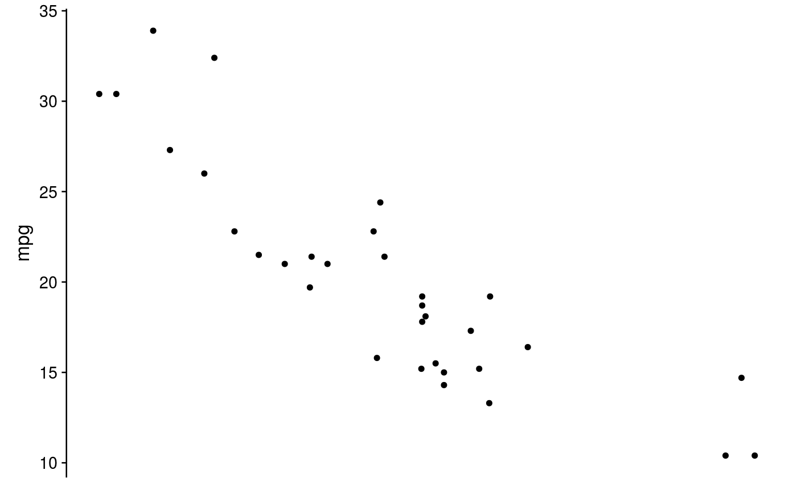
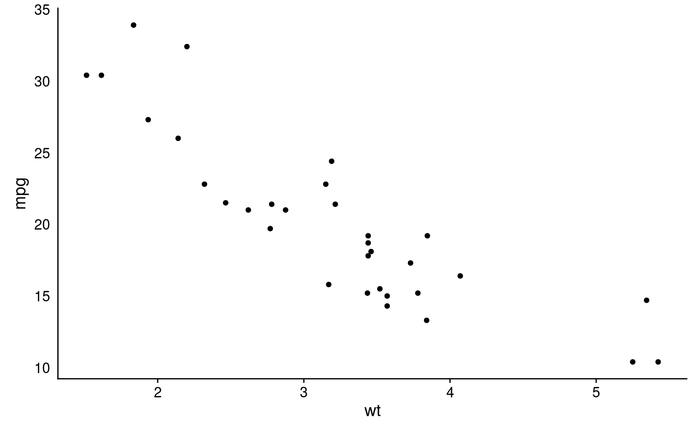

Easily remove one or more axes
easy_remove_axes by default removes both axes, but can remove only x or y if "x" or "y" is given to the 'which' argument
easy_remove_axes(which = c("both", "x", "y"), what = c("ticks", "title", "text", "line"), teach = FALSE) easy_remove_y_axis(what = c("ticks", "title", "text", "line"), teach = FALSE) easy_remove_x_axis(what = c("ticks", "title", "text", "line"), teach = FALSE)
Arguments
| which | which axis or axes to remove, by default "both" |
|---|---|
| what | axis components to remove
( |
| teach | print longer equivalent |
Value
a theme object which can be used in
ggplot2 calls
Details
easy_remove_x_axis and easy_remove_y_axis remove just the x or y axis, respectively.
Examples
# Remove just the ticks # Remove y axis ggplot(mtcars, aes(wt, mpg)) + geom_point() + easy_remove_y_axis(what = "ticks")